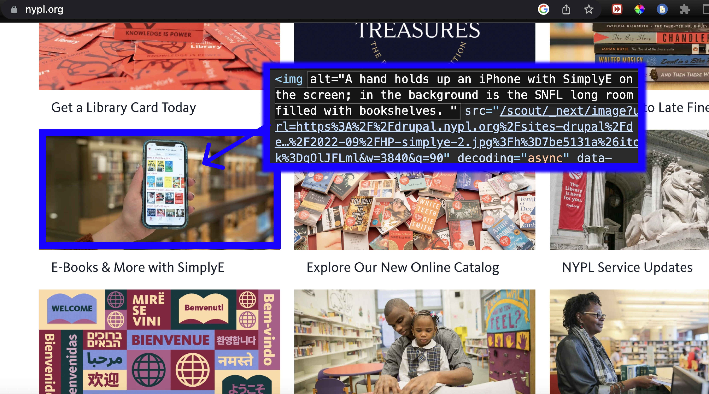

← back

Excerpt from
Alt Text As Poetry:
What is alt text
Alt text (or alternative text) is a written description of an image posted online. Alt text can also be added to images embedded in digital documents (PDFs, Word documents, Google docs, presentations, etc).
.... Alt text allows visual content to be accessible to people who are blind, have low vision, or have certain cognitive disabilities.
Blind people often use software called screen readers to access digital displays. The screen reader outputs the text on the screen to a synthetic voice or refreshable braille display. On a website, a screen reader might readout options in the navigation bar, followed by the title, the first paragraph, the second paragraph, etc. When a screen reader encounters an image, it’s unable to “read” it. So instead, it looks for the alt text — an associated description of the image, embedded in the code. This is how alt text functions as a non-visual alternative to an image.
Alt text and you
Alt text is not visually displayed on a website, so if you aren’t a web developer or a screen reader user, you mostly interact with alt text by writing it and adding it to your images through designated form fields during the image upload process. When you include alt text with your images, you contribute to making the internet a more accessible place.
You have the option to add alt text to your posts on Twitter, Instagram, and Facebook. Depending on the platform you use, it may be possible to add alt text to your personal website or blog (and if the platform doesn’t include a field for entering alt text, you can usually work around that by including an image description in the caption or somewhere else adjacent to the image). It is important to note that alt text is only one part of web accessibility. Don’t assume that because you’ve added alt text a website is fully accessible.
You may be able to influence the accessibility practices where you work or volunteer. Even if the organization’s website or social media aren’t directly your responsibility, it’s worth asking questions about accessibility practices to make sure that people are aware of alt text.
If you are looking for instructions about how to add alt text to a specific platform, you should be able to find a step-by-step guide by searching online. For example, search “how to add alt text to twitter.”
Writing alt text
Wikipedia's Style Guide offers these questions to ask yourself when writing alt text:
- Why is this image here?
- What information is it presenting?
- What purpose does it fulfill?
Though alt text is usually thought of as part of the nuts and bolts of a website, it has tremendous expressive potential. How to translate visual information into text is a complex and interesting task.
That said, when thinking about its expressive potential, it is important to stay rooted in alt text as an accessibility practice. When writing alt text, work in a way that centers the experience of someone who has limited or no access to the visual information in the image.
Let's surf the web together and examine Alt-text 'in the wild.'
In Chrome, on any website, you can right click on an image and select 'inspect' to view its HTML code. Take a few minutes to try this out on different websites.
← back